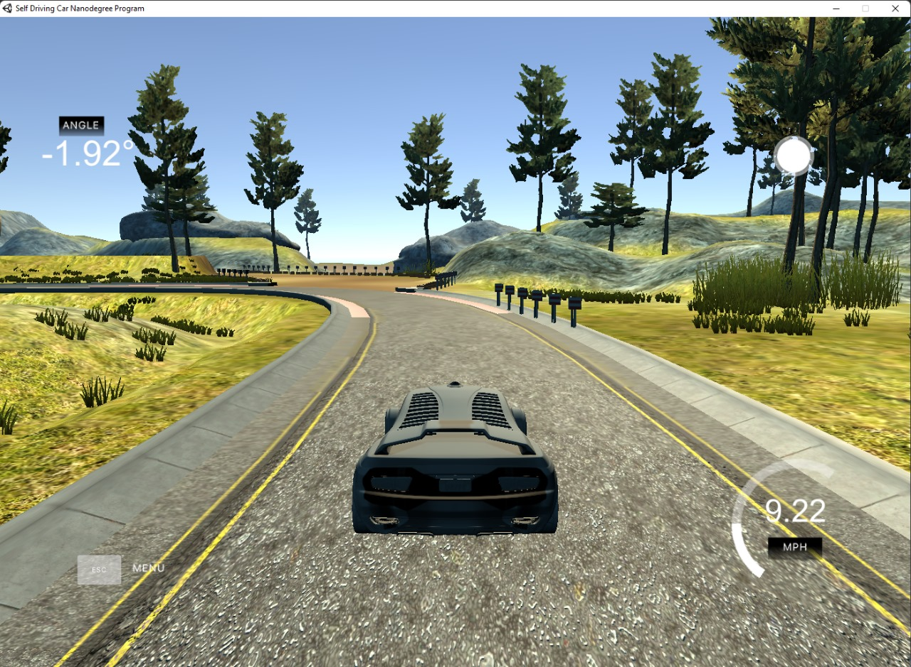
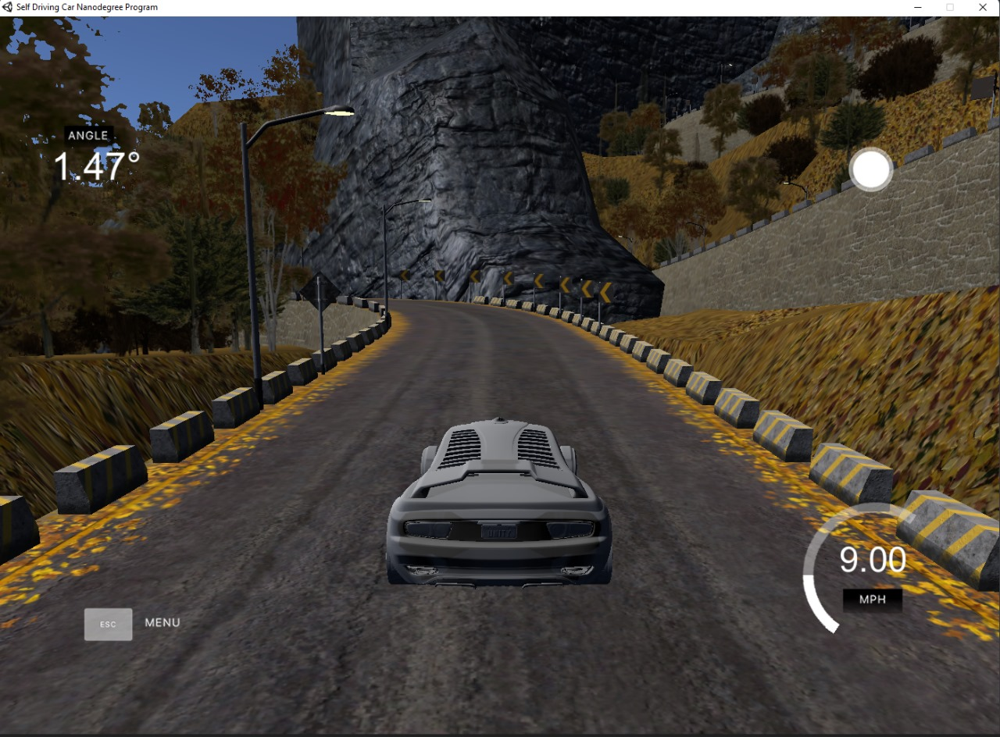
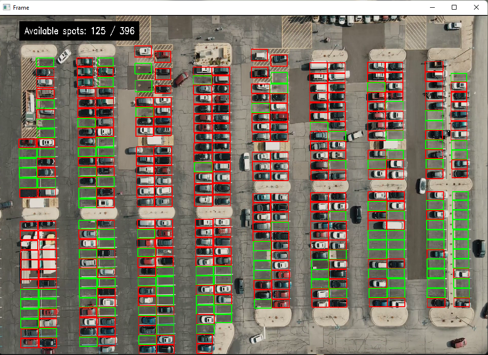
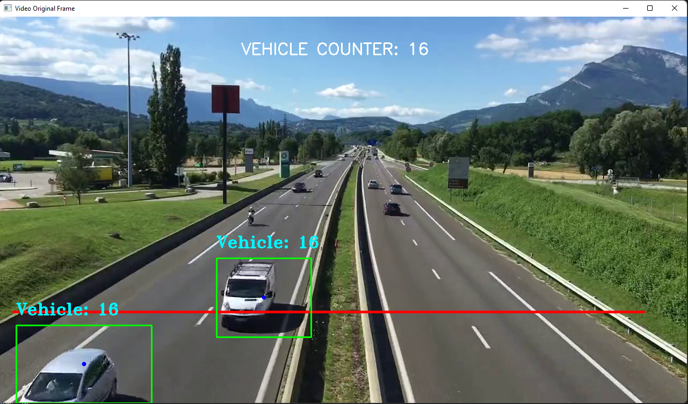

🙂 Hello, I'm Aman!
👨🏻💻 I am a software developer, prompt engineer and an aspiring AI applied research scientist.
📚 Currently, I am a fourth-year computer science student in the School of Computing Science and Engineering (SCSE), VIT Bhopal University, India.
🤖 I have a keen interest in building AI systems for real-world problems.
For the past year and a half, I have been broadly working in the area of Machine Learning and Deep Learning,
due to which I have created several fundamental and advanced projects. Additionally, I have taken and completed various courses related to these areas.
🔬 My research interests primarily lie in the areas of Deep Learning, Computer Vision, and Robotics. In particular, I am highly interested in the applications of Deep Learning and Computer Vision in Autonomous Systems and Computational Imaging.
Projects
- Self Driving Car
- A Self-Driving Car Steering Simulator built using Udacity Car Simulator.
- It is an implementation of NVIDIA's End to End Learning for Self-Driving Cars research paper.
- It consists of 4 convolutional layers with increasing filter sizes, followed by 3 fully connected layers.
- The output layer has a single unit, and the model is compiled with the mean squared error loss and Adam optimizer for regression tasks.
- Rock Paper Scissors Classification using MobileNet V2
- This project employs a Rock Paper Scissors Classification system by leveraging MobileNet V2, a powerful neural network architecture.
- The model is capable of discerning and categorizing hand gestures into rock, paper, or scissors by analyzing images. The system accomplishes this through the use of deep learning techniques, utilizing MobileNet V2's pre-trained features to identify key patterns in the images.
- This enables the model to make accurate predictions based on input images, delivering a robust classification solution for the game of Rock, Paper, Scissors.
- Real-Time: Parking Spot Detection System
- Parking Spot Detection System identifies the availability of parking spots in real-time.
- It achieves this by analyzing the difference between consecutive frames and uses a pre-defined mask to isolate parking spots.
- It reads video data from a specified file, processes each frame, and calculates the difference between frames to detect changes in parking spot occupancy.
- Vehicle Tracking and Counting System
- The Vehicle Counting System aims to count the number of vehicles passed by in a particular region of interest.
- Can be used as an efficient system for tracking and monitoring vehicles in real-time.
- Movie Recommendation System
- Customer Segmentation
- Olympics Games Analysis - Web App
- The "Olympics Analysis Web App" is a cool project where I used tools like pandas and numpy to play with Olympic data.
- Users can uncover trends, patterns, and historical insights through an intuitive web interface created using Streamlit.
- Whether examining medal counts, analyzing athlete performance, or visualizing the evolution of sports over time, dive into Olympic history, see who won the most medals, and explore sports trends - all in one place!
📷 Computer Vision
Track 1 
Track 2 
Note: I am still working on improving the project.
GitHub☝

GitHub

GitHub

GitHub📈 Machine Learning
A Content and Popularity-based Recommendation System that uses Cosine Similarity Algorithm to find similarities between user data to recommend or suggest new movies to the users.

A Machine Learning model, which uses K-Means Clustering Algorithm to visualize clustered customer data into plots and to get better insights about the data. So that it can help us to make better decisions for the businesses.

📊 Data Analysis

👨🏻🔬 Experience
- Summer Intern - Department of CSE - IIT, Hyderabad
- Wrote and tested the code for Data Protection Security Requirements which included understanding and analyzing the data, due to which gained the valuable skill of Prompt Engineering.
- Worked under Professor Dr. Abhinav Kumar on the Project "Indian Telecommunication Security Assurance Requirements (ITSAR)".